|
|
| fishes text index | photo index |
| Phylum Chordata > Subphylum Vertebrata > fishes> Family Synanceiidae |
| Hollow-cheeked
stonefish Synanceia horrida Family Synanceiidae updated Oct 2020
Where seen? This squat grumpy-looking, ugly fish is, to our discomfort, quite commonly encountered on many of our shores including our recreational beaches. It is particularly abundant near artificial seawalls. It is also present in living reefs and rubbly areas nearby. Resembling a encrusted stone, it is often overlooked. When spotted, however, a stonefish is often the subject of morbid fascination due to its hideous appearance and potent venom. Also called the Estuarine stonefish, it is also found in muddy places and estuaries. Features: The fish really looks like a stone. It grows to nearly 50cm, those seen about 15-20cm. The eyes are close together with a bony ridge between them. It has a deep depression below each eye. The huge mouth faces upwards and is curved into a perpetual frown. It has a row of tough dorsal spines that can inject potent venom; these are used for self-defence and not for hunting. The skin is leathery with prominent warts on the sides. During the day, it lies motionless on the sandy bottom, in a shallow depression that it creates by scooping sand out and piling sand around its sides with its huge pectoral fins. It usually lies with its tail curled around the body resulting in stone-like profile. Sometimes the fish is covered in patches of algae and encrustations thus completing its disguise. At night, it is said to be more active and often moves on top of reefs. Sometimes mistaken for scorpionfishes. Here's more on how to tell apart fishes that look like stones. |
 Large pectoral fins. Tail curled. Spines up. Pulau Hantu, Mar 06 |
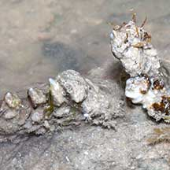 Tough spines can penetrate a thick soled shoe! Pulau Hantu, Mar 06 |
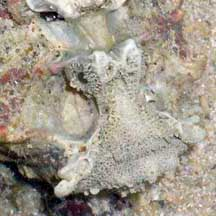 Deep depressions beneath the eye. Mouth in perpetual frown. Raffles Lighthouse, Aug 06 |
|
| Can you spot the stonefish in the photo? |
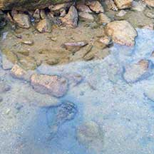 Tanah Merah, Aug 11 |
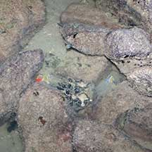 Tanah Merah, Jun 12 |
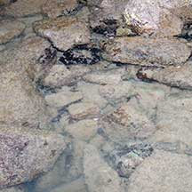 Tanah Merah, Apr 12 |
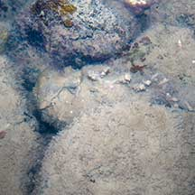 Tanah Merah, May 11 |
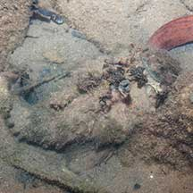 Tanah Merah, Jul 11 |
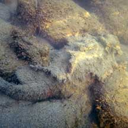 Tanah Merah, Aug 12 |
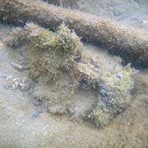 Half buried. Tanah Merah, Jan 10 |
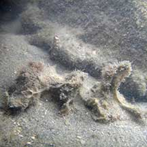 Half buried. Tanah Merah, Dec 10 |
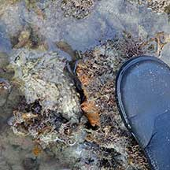 Nearly stepped on a stonefish! Terumbu Hantu, Jul 19 |
| What do they eat? Stonefishes
are carnivores but don't actively hunt their prey. Instead, they lie
motionless, relying on their camouflage to remain undetected. When
a suitable snack comes close enough, they suck it into their huge
mouths, or grab it with a sudden lunge of incredible speed. They generally
eat fishes and crustaceans. What will eat a stonefish? Incredible as it may sound, some animals do eat them. According to the Australian Museum, sharks and rays and a sea snake (Astrotia stokesii) eats them! And of course, some people eat them as a delicacy. Human uses: The stonefish is harvested for the live aquarium trade, as well as an exotic delicacy. |
| Hollow-cheeked stonefishes on Singapore shores |
On wildsingapore
flickr
|
| Other sightings on Singapore shores |
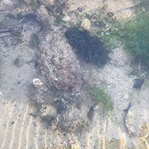 East Coast Park, Feb 19 Photo shared by Camille Lee on facebook. |
Links
References
|